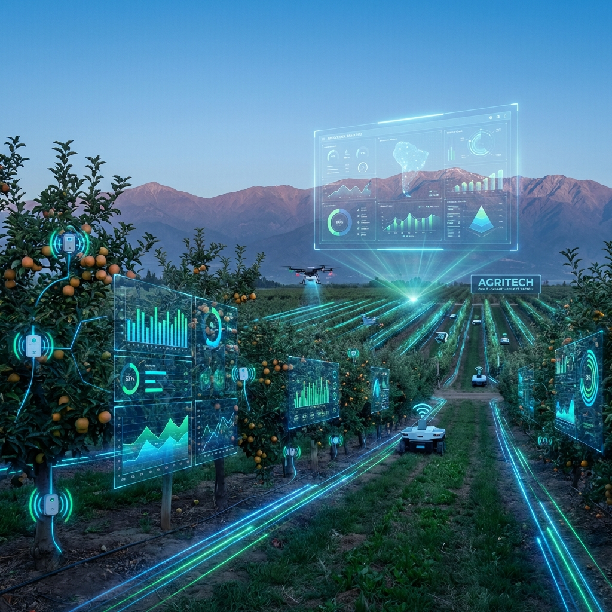

🌱
Agrícola
Por José Mery Grez, PhD • 1 Feb 2025
Inteligencia Artificial en el campo chileno
Cómo la IA transforma la toma de decisiones en huertos de manzanas, cerezas y arándanos.
Artículos de José Mery Grez PhD sobre agricultura de precisión
Por José Mery Grez, PhD • 1 Feb 2025
Cómo la IA transforma la toma de decisiones en huertos de manzanas, cerezas y arándanos.
Por José Mery Grez, PhD • 25 Ene 2025
Guía práctica para implementar monitoreo aéreo en tu predio frutícola.
Por José Mery Grez, PhD • 20 Ene 2025
Imágenes satelitales revolucionan el manejo del viñedo chileno.
Por José Mery Grez, PhD • 15 Ene 2025
Metodología INIA-FIA para gestionar cada sector del huerto.
Por José Mery Grez, PhD • 10 Ene 2025
Los errores más frecuentes y cómo corregirlos en terreno.
Por José Mery Grez, PhD • 5 Ene 2025
Paso a paso para obtener tu certificación de plaguicidas.
Por José Mery Grez, PhD • 28 Dic 2024
Sensores y automatización para optimizar el uso del agua.
Por José Mery Grez, PhD • 20 Dic 2024
Guía para interpretar índices de vegetación en tu predio.
Por José Mery Grez, PhD • 15 Dic 2024
Tendencias y oportunidades en cosecha asistida.
Por José Mery Grez, PhD • 10 Dic 2024
Reduce costos y cuida el medio ambiente con tecnología.
Por José Mery Grez, PhD • 1 Dic 2024
Rentabilidad real y casos de éxito en O'Higgins.
Por José Mery Grez, PhD • 25 Nov 2024
Técnicas probadas para minimizar la deriva.
Por José Mery Grez, PhD • 20 Nov 2024
Selección y regulación según tipo de cultivo.
Por José Mery Grez, PhD • 15 Nov 2024
Datos climáticos para mejores decisiones de riego.
Por José Mery Grez, PhD • 10 Nov 2024
Más allá de la sustentabilidad: restaurar el suelo.
Por José Mery Grez, PhD • 1 Nov 2024
Cambios en regulación de plaguicidas.
Por José Mery Grez, PhD • 25 Oct 2024
Monitoreo de madurez y predicción de cosecha.
Por José Mery Grez, PhD • 20 Oct 2024
La clave para una pulverización eficiente.
Por José Mery Grez, PhD • 15 Oct 2024
Características y selección para huertos modernos.
 🌱
Agrícola
🌱
AgrícolaPor José Mery Grez, PhD • 10 Oct 2024
Crear cultura de seguridad en equipos de aplicación.
Por José Mery Grez, PhD • 1 Oct 2024
Sensores y algoritmos para nutrición precisa.
Por José Mery Grez, PhD • 25 Sep 2024
Tecnología para mejorar calidad exportable.
Por José Mery Grez, PhD • 20 Sep 2024
20 años de experiencia en terreno.
Por José Mery Grez, PhD • 15 Sep 2024
Checklist técnico para evaluar equipos.
Por José Mery Grez, PhD • 10 Sep 2024
Cumplimiento y buenas prácticas.
Por José Mery Grez, PhD • 1 Sep 2024
Tecnologías y estrategias efectivas.
Por José Mery Grez, PhD • 25 Ago 2024
Usar datos históricos para calibrar intensidad.
Por José Mery Grez, PhD • 20 Ago 2024
Apps y trampas inteligentes para MIP.
Por José Mery Grez, PhD • 15 Ago 2024
Sistemas digitales que exige el mercado.
8 Ene 2025
Estrategias para mejorar satisfacción y retención.
5 Ene 2025
Actividades de integración con resultados medibles.
20 Dic 2024
Programas de apoyo efectivos para empresas.
10 Dic 2024
Impacto en el bienestar del equipo.
3 Ene 2025
Gestionar equipos de trabajo rural.
28 Dic 2024
Indicadores clave de productividad.
15 Dic 2024
Planificación efectiva de personal.
20 Dic 2024
Plataformas LMS y tracking de certificaciones.
15 Dic 2024
Por dónde empezar con tecnología.
1 Dic 2024
Comparativa de plataformas disponibles en Chile.